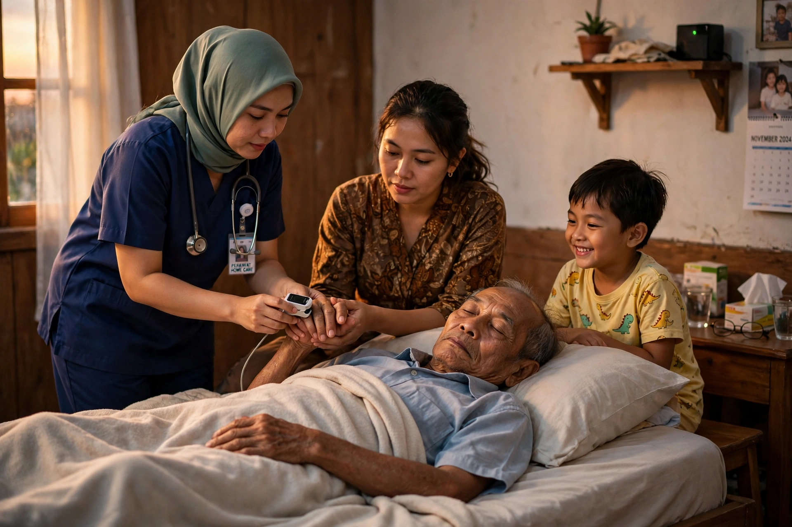
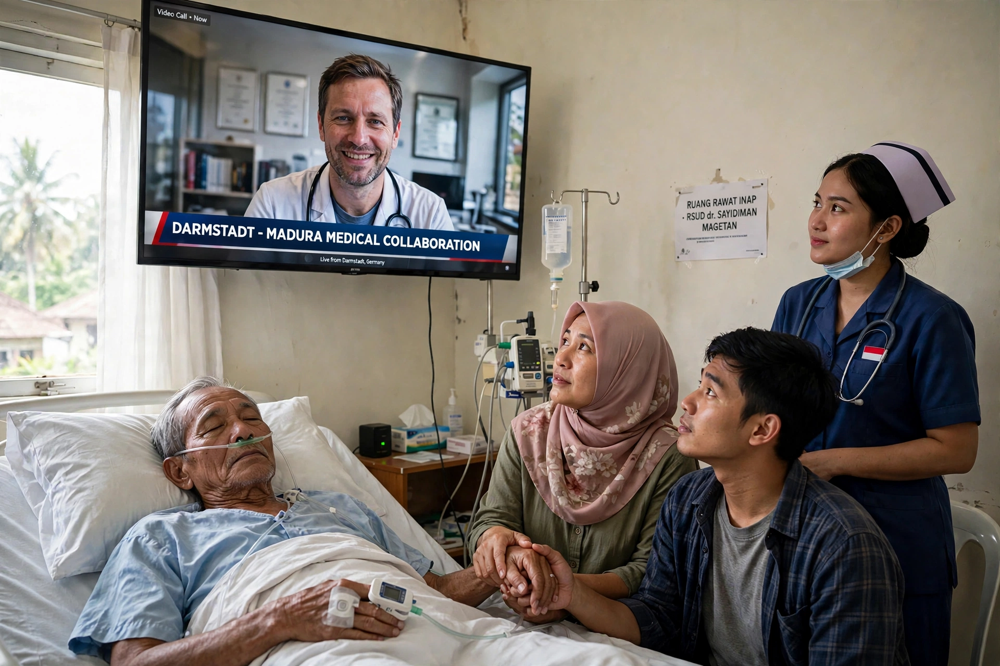
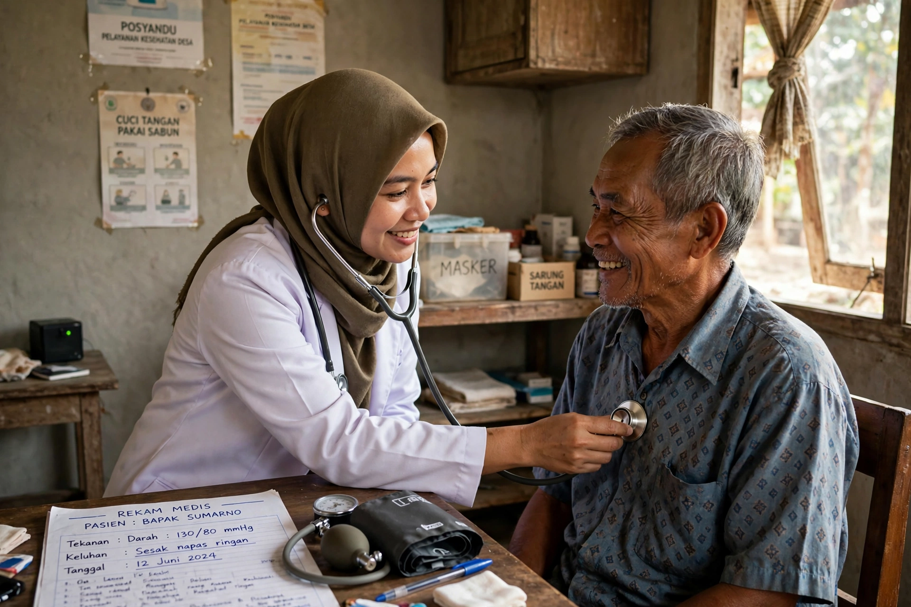

Perawatan di rumah
Tenang itu juga teknologi.
Perawat memeriksa pasien. Keluarga menemani. Alat medis yang sudah dikenal tetap dipakai selama pemulihan di rumah.

Jembatan teknologi untuk nyawa
OTRIS menjembatani alat medis yang sudah ada, data, dan manusia agar pasien, keluarga, dan dokter tetap terhubung setelah pasien pulang dari ICU.

The Jembatan
Monitor dan alat medis di ICU maupun di rumah tetap digunakan. Jalur datanya yang disambungkan agar informasi pasien sampai ke dokter dan keluarga yang mendampingi.
THE JEMBATAN Final v2 · 262 halaman · ISBN 978-634-243-979-1
Konstitusi OTRIS · Perubahan substansi melalui Proses 90 Hari.
Perawatan di rumah
Perawat memeriksa pasien. Keluarga menemani. Alat medis yang sudah dikenal tetap dipakai selama pemulihan di rumah.


Kontrol di Posyandu
Dokter memeriksa pasien dan membuat keputusan klinis. OTRIS dirancang untuk menjaga jalur informasi agar dokter bisa berkoordinasi dengan orang yang ikut menangani pasien.
Dokter, perawat, teknisi, kepala desa, dan keluarga pasien bisa ikut. Tujuannya agar jarak tidak menghalangi orang mendapat perawatan.
Dampingi pasien yang tinggal jauh dan bantu jaga kesinambungan perawatannya.
Sediakan ruang dan bantu pasien, keluarga, dan tenaga kesehatan menggunakan jembatan ini.
Bantu dengan tenaga dan jasa. Ceritakan pengalamanmu agar jembatan ini bisa diperbaiki bersama.
Aturan tim OTRIS
Kami mulai dengan satu pasien yang dibantu dan satu desa yang dijaga. Sebelum membantu, pastikan langkah kita menjaga apa yang sudah berjalan.
Local First · AI Powered · Human Owned. Rumah bagi gagasan dan karya yang tetap berada di tangan manusia.
“Rumah ini diwakafkan. Ilmu tidak dijual, yang dijual tenaga dan jasa.”
Ikrar Wijoyo: “Saya mewakafkan pengetahuan OTRIS ini sebagai Wakaf Pengetahuan.”
Wijoyo Kusumo adalah nama dan amanah di balik Pemecah Batu. Satu Rumah, Dua Isi. STOP — REPORT — DO NOT AUTO-REPAIR — DO NOT FABRICATE.
Wakaf OTRIS
Wakaf Rumah — TERBIT. Atas nama Hadi Wijoyo Kusumo, dikelola Hanif Ahdi Fiddini. 20 November 2026. Trace RUMAH-20261120-WAKAF-001.
RUMAH-INSTALL.zip melalui Trust House.